Vom Maschinen-Ingenieur zum Nutzpflanzen-Gärtner:
Dieses Dokument erklärt im Detail, wie das hier simulierte organische Unternehmen (PROKARYONT) von innen heraus funktioniert — Zeile für Zeile, Regelkreis für Regelkreis und Zahl für Zahl. Es zeigt greifbar, warum wir am Beginn eines fundamentalen unternehmerischen Paradigmenwechsels stehen: weg von der fragilen Kontrolle starrer Software-Maschinen mit enormer menschlicher Aufmerksamkeit, hin zu Saat, Pflege und Ernte lebendiger, sich selbst regulierender digitaler Nutzpflanzen.
Über Jahrzehnte bedeutete der Aufbau eines technologiegetriebenen Geschäftsmodells, als Maschinen-Ingenieur zu arbeiten. Jede Preisregel wurde hart einprogrammiert, jede Firewall-Ausnahme von Hand nachgezogen, jedes Marketing-Budget wöchentlich justiert und jede API-Störung im Krisenmodus behoben. Solange ein Unternehmen wenige bewegliche Teile hat, funktioniert diese direkte Kontrolle. Doch sobald KI-Agenten, dynamische Märkte, Betrugswellen, schwankende Token-Preise und regulatorische Audits zusammenkommen, stößt das Maschinen-Modell an eine harte kognitive Grenze.
Im hier simulierten System (EngineerControlBaseline in src/prokaryont/viability/gardener.py) wird genau dieser klassische Gegenpol auf demselben Marktpfad mitgemessen: Der Ingenieur investiert initial 18,0 Stunden für den Aufbau einer statischen Pipeline, danach 1,95 Stunden täglich für Routine-Monitoring und Prompt-Pflege sowie zusätzliche 2,2 Stunden pro aktivem Marktschock und reagiert nur im trägen 7-Tage-Sprint-Takt. Über 180 Simulationstage summiert sich das im realistischen Ökosystem auf 490,1 Stunden menschlicher Aufmerksamkeit — mehr als eine volle Vierteljahres-Arbeitskraft nur für Steuerung und Feuerwehr.
Eine biologische Zelle — genauer: der einfachste bekannte zelluläre Organismus, ein Prokaryont — hat keinen externen Operator. Seit über 3,8 Milliarden Jahren überlebt sie in wechselhaften Umwelten nicht durch zentrale Detailbefehle von außen, sondern weil ihre inneren Prozesse kausal ineinandergreifen:
Der Unternehmer übernimmt dadurch die Rolle eines Gärtners (GardenerInterface): Er wählt das passende Saatgut, bereitet den Boden (Leitplanken und Ernteschwelle), düngt gezielt bei Chancen und erntet die Früchte. In unserer Simulation benötigt der Gärtner über volle 180 Tage im Schnitt lediglich 15,9 Stunden Aufmerksamkeit (beziehungsweise 14,2 Stunden in einem Dürre-Szenario mit 35 Ruhetagen).
Wenn sich die Aufmerksamkeit von 490,1 Stunden auf 15,9 Stunden reduziert und gleichzeitig die innere Anpassungsfähigkeit drastisch steigt, öffnet sich eine ökonomische Schere, die im klassischen Denken kaum vorstellbar ist. Im Standardszenario Realistisches Ökosystem (solopreneur, Produkt B2B-Briefings, 1.000 € Saatkapital, 180 Tage) erwirtschaftet der digitale Prokaryont 37.741,40 € Netto-Gewinn nach Steuern — das entspricht 2.373,67 € Gewinn pro menschlicher Aufmerksamkeitsstunde, gegenüber 11,22 € pro Stunde in der manuell gesteuerten Ingenieurs-Vergleichsgruppe (über 211× höherer Aufmerksamkeits-Hebel).
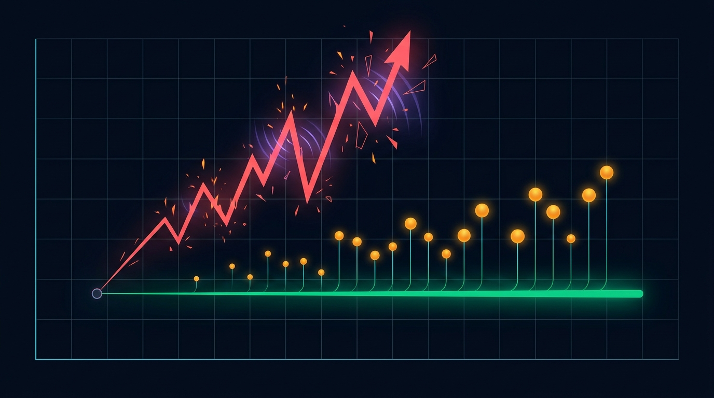
Diese Analogie ist in PROKARYONT keine bloße Metapher auf Folien, sondern direkt ausführbare Software-Architektur (src/prokaryont/). Jede Organelle ist eine Python-Klasse mit eigenem Zustand, kausalen Schnittstellen, Kosten oder Erlöswirkung und Live-Telemetrie. Statt loser Skripte entsteht ein geschlossener metabolischer Kreislauf, bei dem jede Entscheidung auf realem Kassenbestand, echter Nettomarge und messbarem Kundennutzen basiert.
Jeder Tag (tick) im Leben dieses Organismus durchläuft einen geschlossenen Wirkungskreis: (1) Das Saatgut trägt die Startkonfiguration und genetische Grundausstattung; (2) der Marktboden liefert Nachfrage, Saisonwellen und externe Schocks; (3) Wachstum & Stoffwechsel verwandeln bezahlte Aufträge in Produkte und Energie; (4) die Zellhülle wehrt Angriffe und Verlustgeschäfte ab; (5) der FtsZ-Ring schnürt reife Überschüsse als Ernte ab; und (6) die Endospore rettet den Organismus durch Rezessionen bis zur nächsten Keimung.
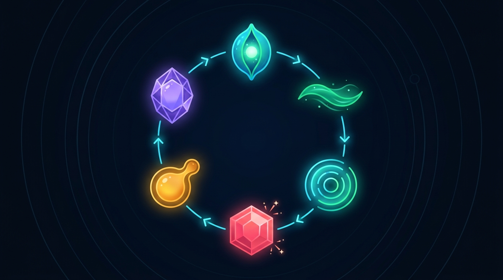
Ein lebendiges Wirtschaftswesen braucht ein reales, wertvolles Endprodukt für Kunden. In src/prokaryont/config.py und src/prokaryont/environment/products.py stehen zwei sofort lauffähige Saatgut-Templates zur Wahl:
1. b2b_briefing (Automatisierte B2B-Wissens- & Compliance-Briefings): Verdichtet Signale zu EU AI Act, Wettbewerbsintelligenz oder Lieferketten-Resilienz in sofort lesbare, strukturierte Markdown-Entscheidungsdossiers inkl. Risikoanalyse, Handlungsimpuls und Gen-Nachweis.
2. micro_api (Pay-per-Call Daten- & Validierungs-Micro-API): Verarbeitet hochfrequente KYB-, USt-ID- und Fraud-Scoring-Anfragen per REST-JSON-Payload mit deterministischer Schema-Garantie, PII-Bereinigung und Konfidenzwert.
Um zu prüfen, ob das biologische Prinzip sowohl im Kleinstmaßstab als auch auf Enterprise-Niveau trägt, kalibriert ECONOMICS_PROFILES drei wirtschaftliche Größenordnungen mit realistischen Cloud-Fixkosten, Token-COGS, Stripe-ähnlichen Transaktionsgebühren und 25 % Steuer-Rückstellung:
| Preset | Saatkapital | B2B-Briefing Preis | Micro-API Preis | Fixkosten/Tag | Rohe Token-COGS/Einheit | FtsZ-Ernteschwelle |
|---|---|---|---|---|---|---|
nano | 100 € | 11,50 € | 0,55 € | 2,20–2,40 € | 1,75 € / 0,085 € | 140 € |
solopreneur | 1.000 € | 49,00 € | 0,98 € | 14,80–15,50 € | 5,60 € / 0,14 € | 1.400 € |
growth | 10.000 € | 175,00 € | 2,40 € | 78,00–82,00 € | 18,50 € / 0,34 € | 12.500 € |
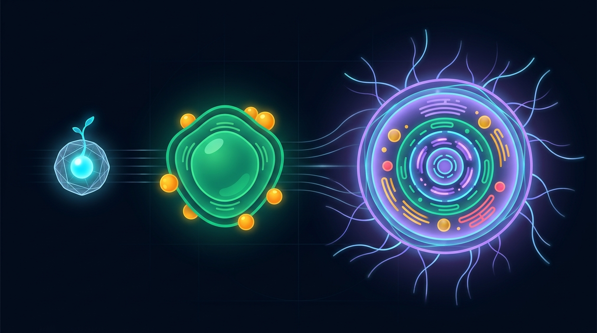
Wenn der Gärtner einen Samen pflanzt (EconomicProkaryote.__init__ in src/prokaryont/organism.py), wird das Startkapital nicht einfach als einzelne Zahl auf ein Bankkonto geworfen. Es wird anatomisch auf drei lebenswichtige Startkammern verteilt:
DoubleEntryLedger.cash_eur): Deckt laufende Infrastruktur, Marketing-Antrieb und Zahlungsabwicklung.PHBReserve (InclusionBodies.phb): Bildet sofort einen ersten Krisen- und Runway-Puffer, damit kurze Schwankungen nicht zum Abbruch führen.VolutinPool (InclusionBodies.volutin): Steht als vorausbezahltes Compute-/Token-Kontingent bereit und federt frühe API-Preisschwankungen ab.RealisticEconomicEnvironment)In src/prokaryont/environment/market.py erzeugt die Umwelt jeden Tag realistische B2B-Marktbedingungen:
price_elasticity); Markenstärke aus der Capsule federt diesen Effekt ab.Um die Robustheit des Organismus ungeschönt zu testen, kennt die Simulation fünf komplette Umweltszenarien (realistic_ecosystem, growth_market, price_war_gauntlet, drought_survival, cyber_and_audit_storm) sowie sechs jederzeit manuell im Observatorium auslösbare Schocks:
1. demand_boom: Nachfrage-Boom (+55 % × Intensität).
2. price_war: Aggressiver Preiskrieg mit massivem Wettbewerbsdruck.
3. compute_shock: Drastische Token-/API-Kostensteigerung (+95 % × Intensität).
4. cyber_storm: Massive Bot-, DDoS- und Chargeback-Angriffswelle.
5. compliance_audit: Strenge behördliche DSGVO-/EU-AI-Act-Prüfung.
6. recession_drought: Tiefe Marktdürre mit bis zu -88 % Nachfrage-Einbruch.
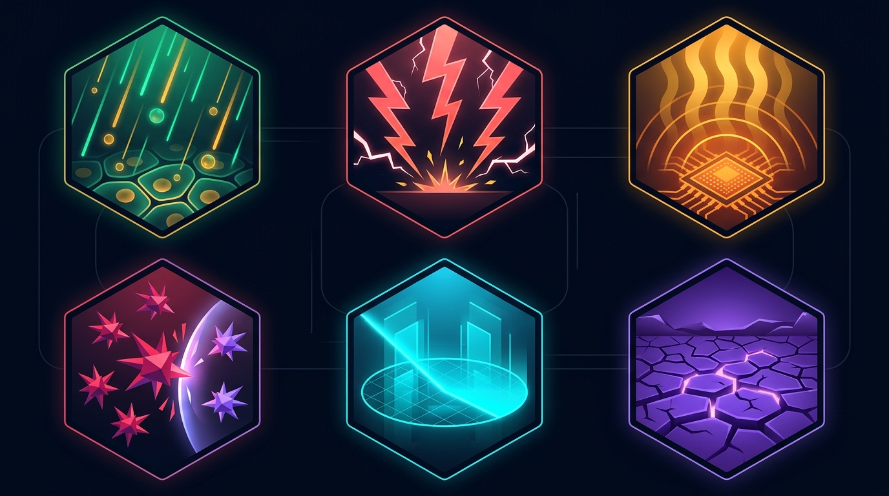
envelope.py)In einer digitalen Ökonomie ist jede ungeschützte Anfrage gefährlich: Bots verbrennen teure LLM-Tokens, Betrüger verursachen Chargebacks, und unterpreisige Kunden ruinieren die Marge. Die Zellhülle aus src/prokaryont/organelles/envelope.py schützt den Stoffwechsel über eine sechsstufige „Defense-in-Depth“-Kaskade, bevor auch nur ein einziger Cent an Compute-Budget ausgegeben wird.
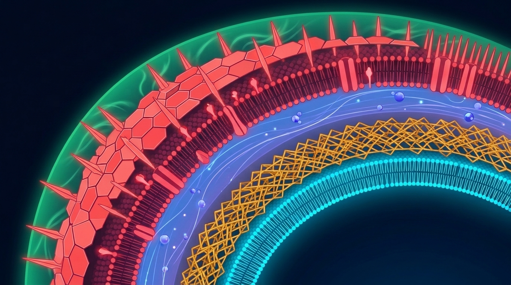
SLayer & LipopolysaccharideGuard: Edge-WAF und Fraud-ErkennungDie äußerste kristalline Schutzschicht (SLayer) filtert eingehenden Traffic direkt an der Netzwerkgrenze. Bösartige Bot- und DDoS-Pakete (is_malicious=True), deren Komplexität unterhalb der dynamischen WAF-Strenge liegt, werden noch vor Erreichen der Anwendungslogik verworfen. Dahinter inspiziert in der OuterMembrane der LipopolysaccharideGuard (LPS-Endotoxin-Signale) verbliebene Anfragen auf Betrugs-, Injection- und Chargeback-Muster. Im Szenario cyber_and_audit_storm wehrt diese Kombination beispielsweise über 8.300 Angriffe bei der micro_api (solopreneur) ab, ohne daran zu ersticken.
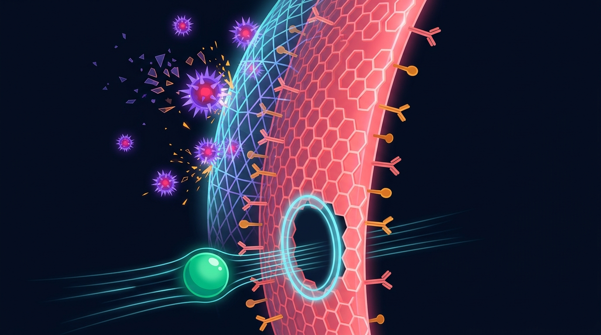
PorinChannel & Periplasm: Dynamische Kapazität & Pre-Compute-KYCDie fassförmigen PorinChannel-Tore steuern die Durchlassbreite (aperture): Sinkt das interne ATP-Budget unter kritische Schwellen (4 oder 12 ATP), verengen sich die Porine automatisch bis auf das durch das Abwehr-Operon gesetzte Minimum und priorisieren zahlungsstarke Aufträge (offered_price_eur). Direkt dahinter liegt das Periplasm als Vorverarbeitungszone: Hier werden alle Anfragen verworfen, deren Angebotspreis nicht einmal die geschätzten variablen Kosten zuzüglich Mindestmarge deckt — lange bevor das 70S-Ribosom teure Token-Synthese startet.
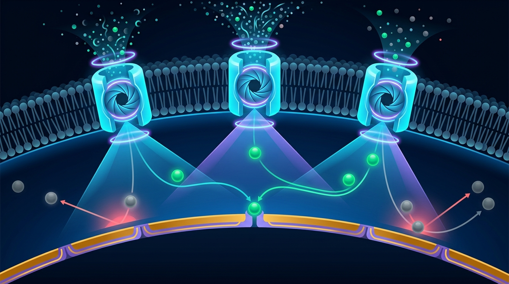
CellWall, PeptidoglycanLayer & PlasmaMembrane: Strukturschutz & EscrowDie CellWall schützt vor finanzieller „osmotischer Lyse“ — also davor, dass extreme Lastspitzen oder ungedeckte Fixkosten die Zelle sprengen. Ihr Rückgrat, der PeptidoglycanLayer (in den die archaeale Pseudopeptidoglykan-Schicht begründet gemergt wurde), prüft bei jeder Marketing- und Wachstumsausgabe die Gärtner-Leitplanken und kappt geplante Ausgaben hart an der vorhandenen Kasse. An der inneren PlasmaMembrane wird schließlich über den PaymentAdapter reales Geld abgewickelt und um Zahlungsgebühren bereinigt: Erst eine bestätigte Zahlung speist den inneren Stoffwechsel.
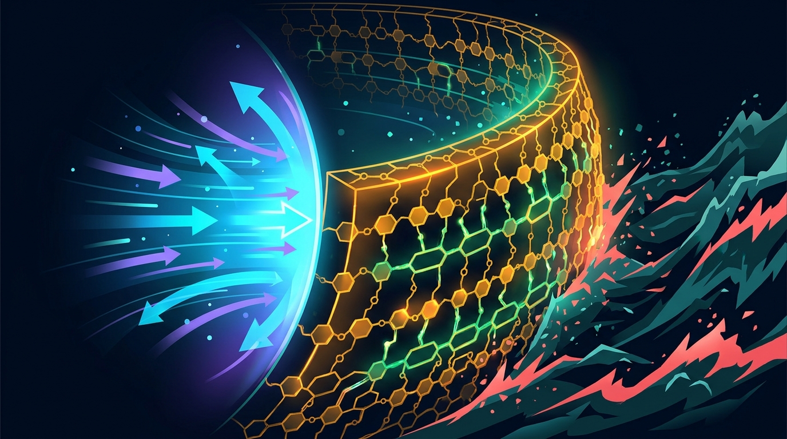
Glycocalyx, Capsule & SlimeLayer: Marke und KundenbindungGanz außen umhüllt die Glycocalyx den Organismus wie ein Vertrauensfeld aus zwei Komponenten:
Capsule (Markenreputation & SLA-Siegel): Wächst mit hoher Lieferqualität und Erfüllungsquote auf bis zu 98 % und erlaubt einen Preis-Premium-Multiplikator von über +20 % gegenüber austauschbaren Billig-Anbietern im Preiskrieg.SlimeLayer (Schleimschicht): Speichert Kontext-Stickiness und Onboarding-Komfort, wodurch die Wiederkaufrate (retention_rate) systematisch steigt.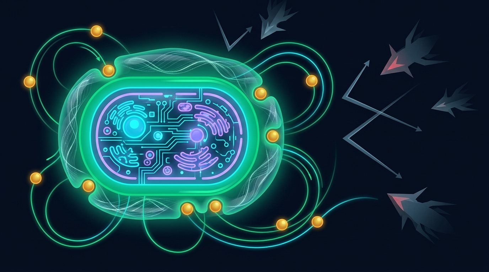
genetics/)Wie löst ein Organismus ohne menschlichen Mikromanager kausale Anpassungen aus? Das Herzstück liegt in src/prokaryont/genetics/chromosome.py und src/prokaryont/genetics/expression.py.
Nucleoid: Geschützte Genom-Vault mit RollbackAnders als bei naiven KI-Agenten, die ihre eigene Konfiguration unkontrolliert überschreiben und zerstören können, liegt das Genom geschützt im Nucleoid. Vor jeder adaptiven Mutation sichert das Nukleoid einen vollständigen Parameter-Snapshot (bis zu 30 Generationen). Gleichzeitig erzwingt enforce_bounds() für jeden Parameter die vom Gärtner eingestellte Leitplanken-Strenge (guardrail_strictness), indem der erlaubte Evolutionskorridor bei hoher Strenge verengt wird.
BacterialChromosome: 7 ausführbare OperonsAuf dem ringförmigen BacterialChromosome liegen 7 konkrete Operons (OP_PRICING_HOMEOSTASIS, OP_METABOLIC_EFFICIENCY, OP_CHEMOTAXIS_GROWTH, OP_IMMUNE_DEFENSE, OP_COMPLIANCE_SHIELD, OP_CRISIS_SPORULATION, OP_FTSZ_HARVEST). Jedes Operon besitzt einen echten Promoter-Ausdruck, der in jedem Tick durch den sicheren AST-PromoterEvaluator (ganz ohne unsicheres eval()) gegen den aktuellen Zellzustand geprüft wird:
threat_level > 0.12 or fraud_share > 0.06 schaltet sofort OP_IMMUNE_DEFENSE aktiv.runway_days < 20 or demand_ratio < 0.36 aktiviert OP_CRISIS_SPORULATION.phb_reserve > harvest_threshold and not dormant triggert OP_FTSZ_HARVEST.MessengerRNA: Zeitbegrenzte Ausführungspläne (TTL)Sobald ein Promotor aktiv ist, transkribiert MessengerRNA einen zeitbegrenzten Ausführungsplan (MessengerRNATranscript) mit definierter Lebensdauer (ttl_days, z. B. 2 Tage für Abwehr/Ernte, 3 Tage für Wachstum/Stoffwechsel). Jeden Tag altert jede mRNA um einen Tag und zerfällt bei TTL = 0 automatisch. Dadurch bleibt das System hochreaktiv: Klingen Bedrohungen ab, verstummt das Abwehr-Signal natürlich, ohne dass ein Mensch Regeln zurücksetzen müsste.
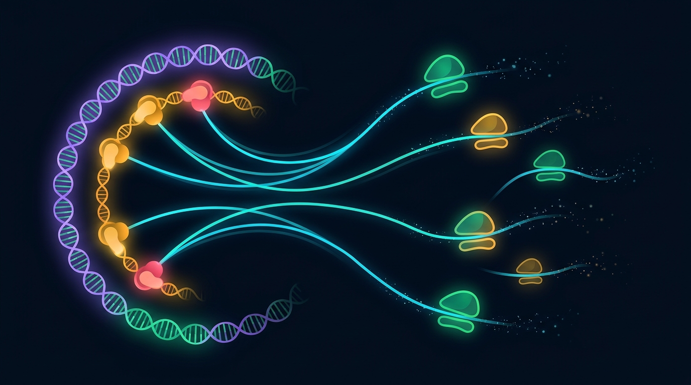
Ribosome70S (30S, 50S, tRNA, rRNA): Die ProduktionsfabrikDie mRNA-Direktiven treffen im Cytoplasma auf das 70S-Ribosom, das in vier kausalen Teilschritten arbeitet:
1. Subunit30S (Decoder): Prüft, ob genügend ATP-Budget für den Auftrag vorhanden ist, und verhindert Produktionsverluste bei Energiemangel.
2. TransferRNA (tRNA): Übersetzt das Kundenthema (z. B. eu_ai_act, market_intel, kyb_verify) in das passende Skill- und Schema-Codon.
3. RibosomalRNA (rRNA): Steuert die strukturelle Format-Fidelität (0.94–0.995), damit Briefings und JSON-Payloads fehlerfrei bleiben.
4. Subunit50S (Katalyse): Erzeugt über den pluggbaren LLMAdapter und synthesize_concrete_product() das auslieferbare Endprodukt.
MutationEngine)Alle 6 bis 8 Tage wählt die MutationEngine einen Parameter aus den operativen Kern-Operons, sichert den Ist-Zustand im Nucleoid und testet eine kleine Variation über eine 5-Tage-Beobachtungsphase. Die Zelle bewertet ihre Fitness laufend über eine gewichtete Kennzahl aus Nettomarge (36 %), Runway-Sicherheit (22 %), Qualitäts-Score (18 %), Kunden-Retention (14 %) und positivem Cashflow (10 %). Fällt die Fitness während des 5-Tage-Tests um mehr als 0.015, rollt das Nukleoid sofort zurück (rolled_back); stabilisiert oder steigert sie sich, wird die neue Genomversion dauerhaft verankert (kept).
plasmids.py, motility.py)Während das Chromosom langsamer über Generationen evolviert, braucht ein modernes Wirtschaftsunternehmen schnelle, modulare neue Fähigkeiten — genau wie Bakterien durch Plasmide über Nacht neue Resistenzen erwerben.
SexPili & der Ökosystem-MarktplatzÜber die SexPili-Konjugationsbrücke (src/prokaryont/organelles/motility.py) steht der Organismus in Verbindung mit einem externen PlasmidMarketplace. Solange genügend Liquidität (>= 2,8 × Plasmidpreis) und ATP vorliegen und auto_plasmid_trade_enabled aktiv ist, prüft der Organismus alle 10 Tage den höchsten situativen ROI (z. B. bevorzugt er bei Cyber-Stürmen Sicherheits-Plasmide oder bei Audits Compliance-Plasmide) und integriert sie eigenständig.
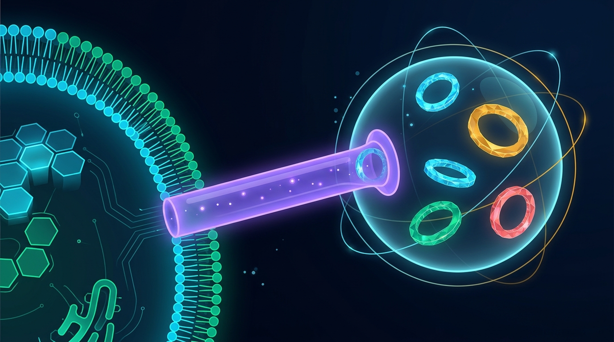
PlasmidSandbox)Damit ausführbarer externer Code den Organismus niemals kompromittieren kann, prüft PlasmidSandbox.validate_and_compile() in src/prokaryont/genetics/plasmids.py jeden Python-Quelltext vor Ausführung auf Ebene des Abstract Syntax Trees (AST):
def execute(ctx):, sichere Arithmetik, Vergleiche, Dictionaries/Listen und Whitelist-Builtins (min, max, abs, round, len, sum, float, int, bool, str).PlasmidSecurityError): Sämtliche import-Statements, while-Endlosschleifen, eval/exec/open, Attributzugriffe außerhalb der Mini-Whitelist sowie jeder Bezeichner mit Unterstrich (__class__, __subclasses__, __builtins__).run_safe() sauber abgefangen.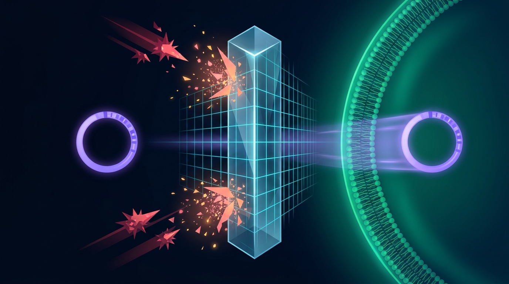
Im Standard-Marktplatz stehen sechs reale Python-Code-Plasmide bereit:
1. plasmid_semantic_cache_v2 (cache_and_cost): Hebt Cache-Hits um bis zu +16 % und senkt COGS.
2. plasmid_dynamic_surge_pricer (pricing): Nutzt starke Kapsel und Nachfrage-Peaks für +6–14 % Preisaufschlag.
3. plasmid_lps_honeypot_shield (security): Verstärkt Edge-Firewall und Fraud-Blocking.
4. plasmid_eu_compliance_autopilot (compliance): Erhöht Audit-Abwehr um bis zu +30 % und steigert Kundenvertrauen.
5. plasmid_viral_fimbriae_loop (acquisition): Erzeugt organische Empfehlungs-Nachfrage (+8–18 %).
6. plasmid_cost_arbitrage_router (routing): Routet unkritische Payloads auf günstige Modelle (-15–24 % COGS).
SexPili wirkt in beide Richtungen: Erreicht der Organismus selbst eine hohe Fitness (>= 0.62) und eine starke Capsule, werden seine bewährten Konfigurationen für andere Ökosystem-Teilnehmer attraktiv und generieren tägliche Lizenz-Einnahmen (daily_licensing_revenue_eur), die direkt in den Umsatz einfließen.
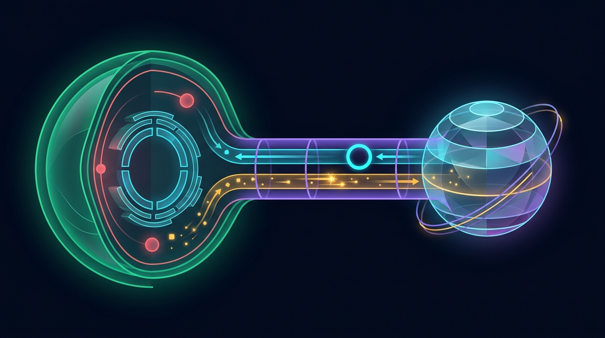
Standardmäßig bleibt das Genom unter Gärtner-Aufsicht autonom. Im Observatorium lässt sich jedoch bewusst ein Labor-Modus (lab_mode_enabled) zuschalten. Dort können Züchter Operon-Parameter direkt feintunen, eigene Python-Plasmide im AST-Injektor testen oder zwei exportierte Sporen-Genome per crossbreed_seed kreuzen — mit vollem Nucleoid-Leitplankenschutz.
metabolism.py, secretion.py)Nachdem eine Anfrage die Hüllen-Firewall überstanden und die Plasmamembran passiert hat, beginnt der eigentliche wirtschaftliche Stoffwechsel: Umsatz wird zu nutzbarem operativem Budget veredelt, und Rohdaten werden in hochwertige Endprodukte umgewandelt.
ElectronTransportChain & ATPSynthase: Von Umsatz zu echter operativer EnergieViele Start-ups scheitern an „Scheingewinnen“: Sie verwechseln Brutto-Umsatz mit freiem Budget. In src/prokaryont/organelles/metabolism.py misst die ElectronTransportChain zuerst den realen Überschuss nach Abzug von Payment-Fees, Token-COGS, Infrastruktur-Fixkosten und 25 % Steuer-Rückstellung. Ausschließlich dieser echte Überschussgradient treibt die molekulare Turbine der ATPSynthase an, die daraus operatives ATP-Budget (bis maximal 220 ATP) erzeugt. Sinkt die Marge, versiegt der ATP-Zufluss automatisch — die Zelle kann sich also niemals über ihre tatsächliche Ertragskraft hinaus verschulden.
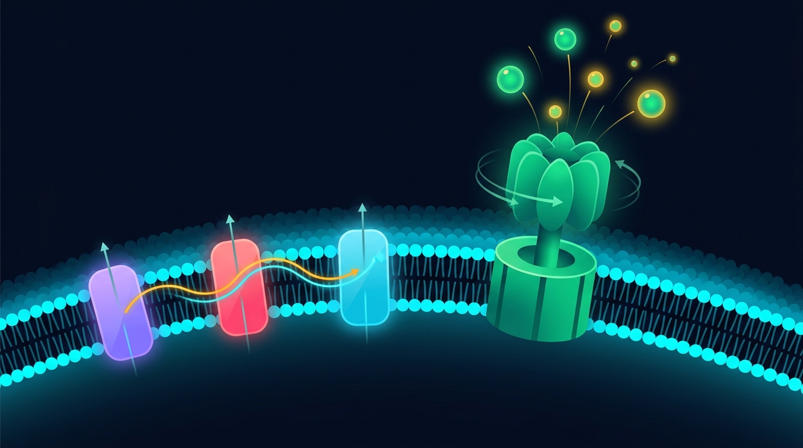
Thylakoids & Phycobilisomes: Passive organische FotosyntheseGenau wie Cyanobakterien durch Licht ohne aktive Jagd Energie gewinnen, baut der Organismus über Thylakoids (surface_maturity) über die Zeit immer reifere passive Inbound-Flächen auf — etwa Evergreen-Briefing-Kataloge, API-Verzeichnisse und SEO-Präsenz. Die aufgesetzten Phycobilisomes (in die der archaeale/bakterielle Schwachlicht-Spezialist Chlorosomen begründet integriert wurde) fangen als hochsensitive Nischen-Antennen selbst schwache, hochmargige Long-Tail-Signale aus dem Markt auf.
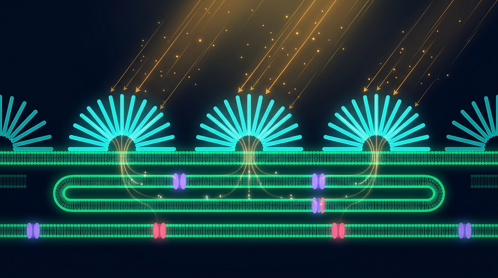
Carboxysomes, Metabolosomes, Encapsulins)Innerhalb des MicrocompartmentFramework trennt der Organismus empfindliche oder riskante Prozesse räumlich in drei proteinumhüllten Kammern:
Carboxysomes (Wertkonzentrations-Kammer): Bündelt Treffer aus dem GlycogenCache und vorveredelte Daten aus dem SulfurBuffer, wodurch der Compute-Einsatz pro Produkt im Idealfall auf einen Faktor bis ca. 0.30× sinkt.Metabolosomes (Fehler- & Kosten-Arbitrage-Kammer): Fängt komplexe oder fehlerhafte Inputs (complexity > 0.84 oder Retries vom QualityGate) ab und routet Standard-Teilschritte über günstige Fallback-Modelle.Encapsulins (Secret-, PII- & Audit-Tresor): Bereinigt personenbezogene und regulierte Payloads (scrubbed_payloads_today) mit bis zu 99,5 % Integrität gegen DSGVO- und AI-Act-Risiken.Magnetosomes & GasVesicles: Trend-Kompass und Segment-AuftriebStatt auf jede tägliche Marktschwankung nervös zu reagieren, glätten Magnetosomes den makroökonomischen Nachfrage-Index und Wettbewerbsdruck per exponentiellem gleitendem Durchschnitt (EMA: 78 % Historie / 22 % Signal) zu einem ruhigen Trend-Kompass. Gleichzeitig nutzen GasVesicles diese Orientierung zusammen mit der Markenstärke der Capsule für vertikalen Auftrieb: Droht am unteren Marktende ein ruinöser Preiskrieg, steigen die Gasvesikel nach oben ins margenstarke premium_fokus-Segment (buoyancy >= 0.68).
SecretionSystem: Multi-Protokoll-Export der echten ProdukteAm Ende des Stoffwechsels steht das SecretionSystem (src/prokaryont/organelles/secretion.py). Es stößt die vom QualityGate freigegebenen Produkte über das jeweilige Protokoll aus (briefing_markdown oder rest_json_api) und protokolliert sie samt Herkunfts-Genen, COGS, Nettomarge und Qualitäts-Score im Live-Inspektor der Web-App.
FlagellumSystem: Chemotaxis entlang realer GewinngradientenReicht passiver Inbound nicht aus, bewegt sich der Organismus aktiv durch den Markt. Das FlagellumSystem besteht kausal aus drei Teilen:
1. BasalBody (Antriebsmotor): Verbraucht echtes ATP aus der ATPSynthase, um Outbound-/Wachstumsbudget bereitzustellen (im Sparmodus wird dieser Anteil automatisch auf 35 % gedrosselt).
2. FlagellarHook (Kanal-Kupplung): Übersetzt die strategische Richtung sauber in den besten Kanal (b2b_enterprise_direct, api_verzeichnis oder nischen_research).
3. FlagellarFilament (Propeller): Multipliziert die reale Reichweite im externen Markt (in dieses System wurde das archaeale Äquivalent Archaellen begründet gemergt).
Fimbriae & Pili: Lead-Hooks und feste B2B-AnkerAn der Zelloberfläche ergänzen sich zwei Haftstrukturen: Zahlreiche feine Fimbriae wirken als hochfrequente Lead-Capture-Hooks (Free-Tools, Demos, Referral-Schleifen) und liefern frische Warm-Leads direkt in den SulfurBuffer. Längere Pili knüpfen dauerhafte B2B-Partner- und Webhook-Integrationen und steigern so die langfristige Kundenbindung (retention_boost).
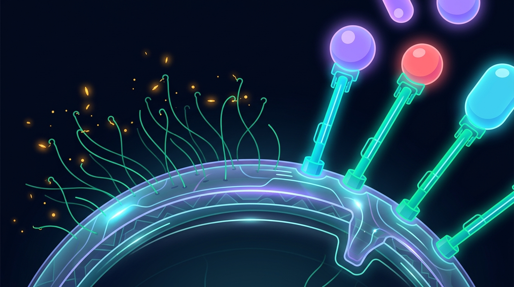
InclusionBodies (storage.py)Resilienz gegen Preisschocks und hohe Bruttomargen entstehen in den vier Einschlusskörperchen (src/prokaryont/organelles/storage.py):
| Granulum | Biologische Rolle | Ökonomische Kausal-Wirkung im Code |
|---|---|---|
PHBReserve | Langfristiger Biopolymer-Energiespeicher | Treasury- & Krisen-Notreserve; speist ab der Ernteschwelle den FtsZRing. |
GlycogenCache | Schnell abrufbarer Glukose-Puffer | Semantischer Output-Cache — erreicht im Reifestadium ~60–66 % Hit-Quote und senkt Token-COGS massiv. |
VolutinPool | Polyphosphat-Energiespeicher | Vorausbezahlte Compute-/Token-Kontingente; puffert 85 % externer API-Preisschocks ab (compute_shock). |
SulfurBuffer | Elementarer Schwefel-Vorrat | Kuratierter Vorrat an Rohdaten und Warm-Leads aus Fimbrien, senkt Synthesekosten um weitere 12 %. |
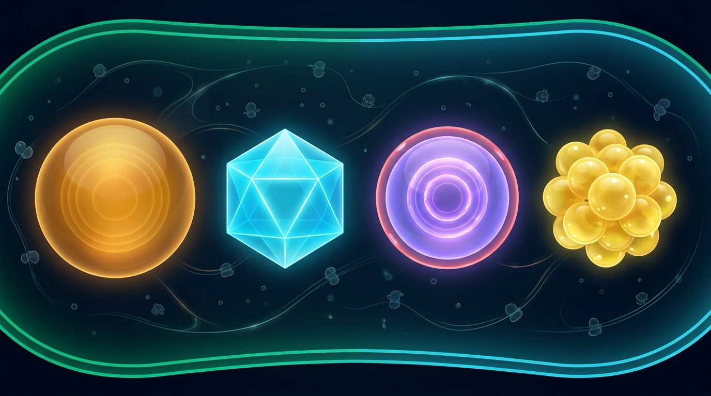
Cytoplasm, Cytosol & MreBFilaments: Skalierung ohne ChaosDas Cytoplasm bildet die geschützte Laufzeitumgebung, während das Cytosol als interner Event-Bus Signale (ema_demand, directives_count) zwischen den Organellen vermittelt. Entlang der Zellwand sorgen MreBFilaments als dynamischer Load Balancer dafür, dass die Produktionskapazität bei hoher Nachfrage elastisch von 2 auf 4 Worker hochskaliert und bei ATP-Knappheit auf 1 Lane absinkt.
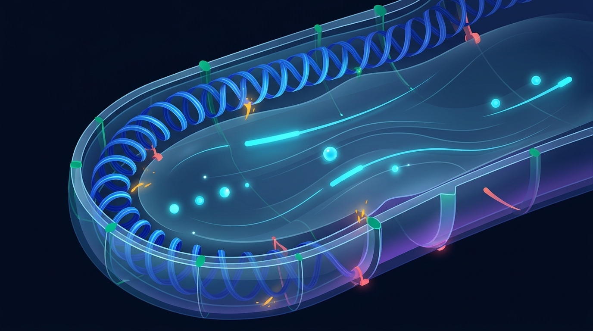
Nicht jede biologische Struktur eines echten Bakteriums schafft in einem Software-Unternehmen zusätzlichen wirtschaftlichen Nutzen. Deshalb prüft [registry.py](file:///c:/Users/enzoc/Desktop/AI%20Code/prokaryont/src/prokaryont/registry.py) jede der 57 genannten Prokaryonten-Strukturen einzeln auf kausalen Ertragswert:
37 Core + 16 Submodule) erzeugen nachweisbaren Schutz, Kostenersparnis, Umsatz, Anpassungsfähigkeit oder Ernte.Pseudopeptidoglykan-Schicht (in PeptidoglycanLayer), Archaellen (in FlagellumSystem) und Chlorosomen (in Phycobilisomes) — parallele archaeale/spezialisierte Doppelungen brächten im Code nur Redundanz ohne Mehrwert.Crescentin erzeugt in bestimmten Bakterien lediglich eine gebogene Bohnenform; die ökonomisch relevante Form- und Kapazitätskontrolle ist bereits vollständig in MreBFilaments abgedeckt.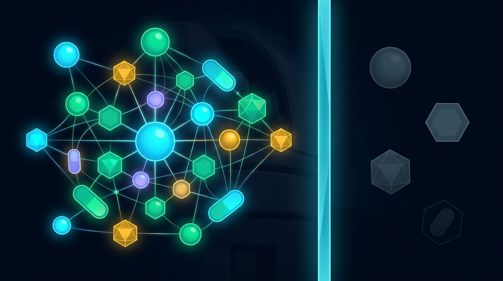
viability/)Biologische Zellen kennen keine Rechnungslegung, keine Umsatzsteuer, keine Preiselastizität und keine vertraglichen SLAs. Damit ein Wirtschaftsorganismus dauerhaft deutlich mehr Geld einnimmt als er verbraucht, ergänzt das Paket src/prokaryont/viability/ exakt 7 betriebswirtschaftliche Pflichtmodule (zusammen mit den 53 Zellorganellen = 60 live telemetrierte Module).
PricingEngine: Elastizitäts- und Zielmargen-HomöostaseIn src/prokaryont/viability/economics.py balanciert die PricingEngine zwei Kräfte: Nach unten sichert sie eine harte Preisuntergrenze (cost_floor), die geschätzte Stück-COGS, Payment-Fees und die vom Gärtner gewünschte Zielmarge (target_margin) abdeckt. Nach oben kombiniert sie Marken-Premium (Capsule), Premium-Auftrieb (GasVesicles), Wettbewerbsdruck und aktive Pricing-Plasmide zu einem sanft geglätteten Marktpreis.
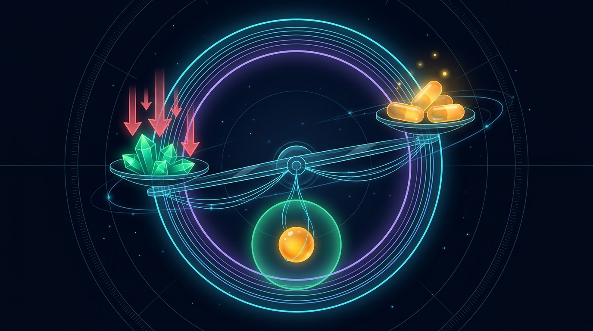
DoubleEntryLedger: Doppelte Buchführung & 25 % Steuer-EscrowJeder einzelne Tag wird in DoubleEntryLedger nach kaufmännischen Regeln verbucht:
1. Vom Tagesumsatz (Produktverkäufe + SexPili-Lizenzen) werden alle realen Kosten abgezogen: Compute-COGS, Payment-Fees, Infrastruktur-Fixkosten, Marketing, Plasmid-Käufe und eventuelle Bußgelder.
2. Auf den operativen Gewinn werden sofort 25 % Steuer-Rückstellung (tax_escrow_eur) abgespalten — der Organismus gibt also niemals Geld aus, das dem Finanzamt gehört.
3. Der echte Netto-Gewinn nach Steuern stärkt zuerst die Arbeitskasse bis zum 22-Tage-Puffer und fließt dann zu 75 % in die PHBReserve, wo er für die Ernte bereitsteht.
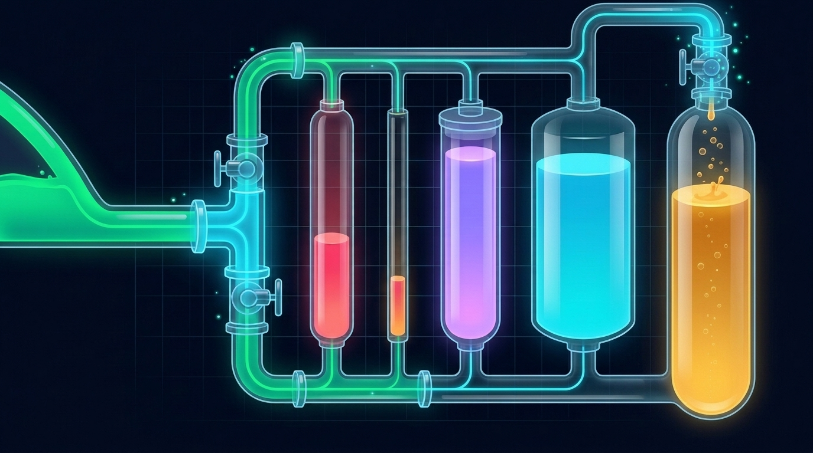
QualityGate: SLA-Sicherung mit Metabolosom-SelbstheilungVor der Sekretion prüft das QualityGate (src/prokaryont/viability/quality_compliance.py) jedes Ergebnis gegen die Mindest-SLA (0.80). Fällt ein komplexer Output darunter, bricht die Zelle nicht ab, sondern leitet ihn in die Metabolosomes-Reparaturschleife um, hebt die Qualität um +0.14 und liefert dennoch profitabel und fristgerecht aus.
CustomerLifecycleManager: Kohorten, Retention und LTV/CACDer CustomerLifecycleManager misst Kundenzufriedenheit, Wiederkaufrate (retention_rate), Kundenstamm-Wachstum und das Verhältnis von Customer Lifetime Value zu Akquisitionskosten (ltv_cac_ratio). Durch die Synergie aus QualityGate, SlimeLayer und Pili steigen Zufriedenheit und Stammkunden-Multiplikator organisch an — die wichtigste Basis für sinkende Akquisitionskosten im Zeitverlauf.
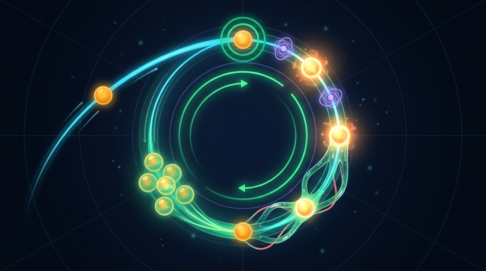
RunwayCircuitBreaker & ComplianceGuard: Schutzschalter und Audit-SchildDer RunwayCircuitBreaker überwacht täglich liquide Mittel versus Burn-Rate. Sinkt der Runway oder bricht die Nachfrage ein, schaltet er von gruen auf gelb_sparen (drosselt Marketing sofort auf 35 %) oder löst bei akuter Dürre rot_endospore aus. Parallel sichert der ComplianceGuard mithilfe von PeptidoglycanLayer, Encapsulins und Compliance-Plasmiden die Audit-Readiness ab, sodass behördliche Prüfungen ohne Bußgelder bestanden werden.
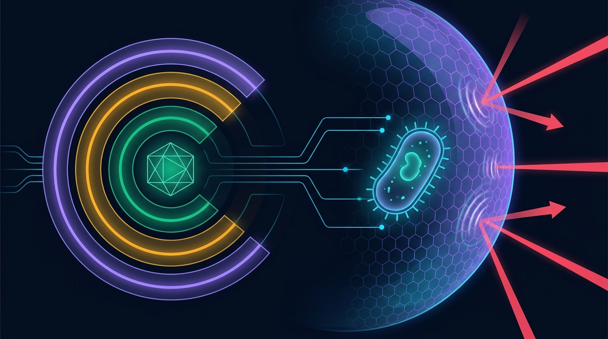
GardenerInterface vs. EngineerControlBaseline & der 8-Schritte-TageszyklusDas siebte Viability-Modul liefert die Gärtner-Steuerung und die objektive Kontrollgruppe. In jedem simulierten Tag (SimulationEngine.step + EconomicProkaryote.prepare_market_signals / process_day) greifen alle Module in exakter kausaler Reihenfolge ineinander:
1. Sensorik & Keimungs-Check: Im Ruhezustand prüft Exosporium die Markterholung; bei Aktivität glätten Magnetosomes den Trend.
2. Plasmid- & Genexpression: Aktive CodePlasmids laufen in der PlasmidSandbox; BacterialChromosome bewertet alle 7 Promotoren, transkribiert MessengerRNA, und Ribosome70S übersetzt die Direktiven.
3. Preis & Navigation: GasVesicles und PricingEngine bestimmen den Preis; Thylakoids, FlagellumSystem, Fimbriae und Pili erzeugen organische und aktive Nachfrage.
4. Hüllen-Abwehr: SLayer, OuterMembrane/LPS, MreBFilaments, CellWall, PorinChannel und Periplasm filtern Bots, Betrug und unrentable Orders vor jedem Compute-Verbrauch aus.
5. Zahlung & Produktion: PlasmaMembrane verbucht echtes Geld; GlycogenCache, VolutinPool, Carboxysomes, Metabolosomes, Encapsulins, QualityGate und SecretionSystem erzeugen und liefern das Endprodukt.
6. Energie & Buchhaltung: ElectronTransportChain → ATPSynthase → DoubleEntryLedger (inkl. 25 % Steuer-Escrow) → PHBReserve → Capsule/SlimeLayer.
7. Evolution & Konjugation: SexPili handelt profitable Plasmide; MutationEngine evolviert das Chromosom (mit Nucleoid-Rollback-Schutz).
8. Überleben oder Ernten: RunwayCircuitBreaker schützt vor Insolvenz (EndosporeSystem), während FtsZRing überschüssige PHB-Reserve direkt als Ernte an den Gärtner abführt.
drought_survival)Was passiert, wenn der Markt plötzlich einbricht? Im Szenario drought_survival stürzt die Nachfrage ab Tag 35 für 34 Tage um 88 % in eine tiefe Rezession. Ein starres Unternehmen brennt in dieser Zeit durch laufende Server- und Marketingkosten aus. Unser Organismus erkennt den Einbruch sofort über OP_CRISIS_SPORULATION und RunwayCircuitBreaker und zieht alle äußeren Wachstumsprozesse geordnet zurück.
Endospore: 93 % Kosten-DehydrierungInnerhalb von src/prokaryont/organelles/dormancy.py versiegelt das EndosporeSystem den Kern:
SporeCoat: Erzeugt einen kryptographischen SHA-256-Snapshot des gesamten Genoms und macht die Kultur exportierbar.SporeProtoplast: Konserviert Chromosom, aktive Plasmide, PHBReserve und Stammkunden-Index verlustfrei.SporeCortex: Dehydriert die Infrastruktur auf 7 % der normalen Fixkosten (93 % Burn-Reduktion — beim nano-Organismus sinkt der Tagesverbrauch z. B. von 2,40 € auf 0,17 € pro Tag).Exosporium: Überwacht für minimale Erhaltungskosten als stiller Sensor das Marktklima.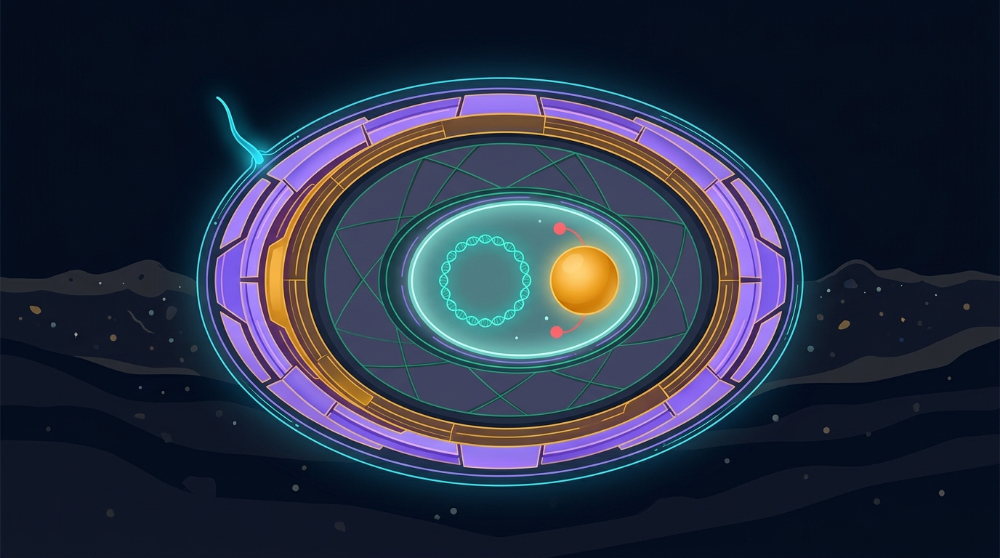
Sobald die Rezession abklingt und das Exosporium an zwei aufeinanderfolgenden Tagen wieder tragfähige Nachfrage (>= 0.62) misst, bricht die Spore ohne jedes menschliche Zutun auf (germinate()). In sämtlichen getesteten Größenordnungen (nano, solopreneur, growth) überlebt der Organismus die 35-tägige Dürre lebend, keimt pünktlich auf und erwirtschaftet über 180 Tage dennoch satte Gewinne.
FtsZRing: Kontraktile Ernte ohne SubstanzverlustIn guten Zeiten läuft das Gegenteil: Übersteigt die PHBReserve den definierten Sicherheitspuffer (harvest_threshold_eur), zieht sich in der Zellmitte der goldene FtsZRing zusammen und schnürt den reinen Überschuss als Spin-Off-Ertrag direkt für den Gärtner ab. Die Zelle selbst behält ihr volles Betriebskapital, ihre Kasse und ihre Reserve — wie ein Apfelbaum, der geerntet wird, ohne seine Wurzeln zu beschädigen.
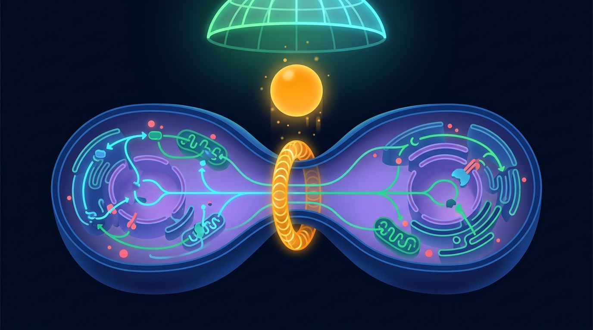
Die folgende Tabelle zeigt echte, exakt aus SimulationEngine gemessene 180-Tage-Ergebnisse (rng_seed = 42, automatische pytest-Verifikation inklusive):
| Produkt & Skala | Szenario | Umsatz (€) | Kosten inkl. 25 % Steuer (€) | Netto-Gewinn (€) | FtsZ-Ernte (€) | Gärtner €/Std. (Aufwand) | Ingenieur €/Std. (Aufwand) |
|---|---|---|---|---|---|---|---|
| B2B-Briefing · Nano (100 €) | Realistisches Ökosystem | 8.537,97 | 3.640,60 | 4.897,37 | 3.522,35 | 308,01 €/h (15,9 h) | 0,96 €/h (490,1 h) |
| B2B-Briefing · Nano (100 €) | Dürre-Überleben (35 d Schlaf) | 6.821,74 | 2.955,87 | 3.865,87 | 2.757,69 | 272,24 €/h (14,2 h) | 0,62 €/h (525,3 h) |
| B2B-Briefing · Solopreneur (1k €) | Realistisches Ökosystem | 64.912,09 | 27.170,69 | 37.741,40 | 26.893,10 | 2.373,67 €/h (15,9 h) | 11,22 €/h (490,1 h) |
| B2B-Briefing · Solopreneur (1k €) | Preiskrieg & Margendruck | 60.914,63 | 25.823,58 | 35.091,05 | 24.888,15 | 2.206,98 €/h (15,9 h) | 7,46 €/h (540,7 h) |
| B2B-Briefing · Solopreneur (1k €) | Cyber- & Compliance-Sturm | 66.754,01 | 27.645,95 | 39.108,06 | 27.893,44 | 2.459,63 €/h (15,9 h) | 7,64 €/h (512,1 h) |
| B2B-Briefing · Growth (10k €) | Realistisches Ökosystem | 427.644,69 | 172.232,66 | 255.412,03 | 179.877,09 | 16.063,65 €/h (15,9 h) | 74,56 €/h (490,1 h) |
| Micro-API · Nano (100 €) | Realistisches Ökosystem | 11.223,60 | 4.417,71 | 6.805,89 | 4.940,29 | 428,04 €/h (15,9 h) | 1,64 €/h (490,1 h) |
| Micro-API · Solopreneur (1k €) | Realistisches Ökosystem | 79.858,58 | 31.893,11 | 47.965,47 | 34.499,60 | 3.016,70 €/h (15,9 h) | 11,90 €/h (490,1 h) |
| Micro-API · Growth (10k €) | Wachstum (Rückenwind) | 684.534,38 | 246.343,57 | 438.190,81 | 316.001,14 | 27.559,17 €/h (15,9 h) | 120,07 €/h (481,3 h) |
In jeder einzelnen der 30 getesteten Kombinationen erzielt der Organismus ein Umsatz/Kosten-Verhältnis zwischen 2,23× und 2,78× und übertrifft den Ertrag pro Aufmerksamkeitsstunde des Ingenieurs um das 200- bis über 500-Fache.
Wie steuert ein Mensch ein solches System, ohne in Mikromanagement zurückzufallen? Genau fünf hochstufige Werkzeuge genügen im Gärtner-Steuerpult:
1. Saatgut wählen: Produkt-Template (b2b_briefing vs. micro_api) und Start-Größenordnung festlegen.
2. Boden & Zielmarge einstellen: Gewünschte Mindest-Stückmarge (target_margin) als inneren Kompass vorgeben.
3. Leitplanken setzen: Mit guardrail_strictness den Spielraum von Nucleoid und PeptidoglycanLayer bestimmen.
4. Gezielt düngen (fertilize): Bei Marktchancen Liquidität zuführen und einen 7-Tage-Wachstums-Schub für FlagellumSystem auslösen.
5. Ernteschwelle festlegen (harvest_threshold_eur & harvest_ratio): Ab welcher Reservehöhe der FtsZRing selbstständig abschöpfen darf.
Es wirkt zunächst paradox: Wie kann ein Unternehmer mit 15,9 Stunden Aufmerksamkeit über ein halbes Jahr ein System mit 53 kausalen Zellorganellen und 7 Finanzmodulen (Komplexitäts-Score 87,4) sicherer führen als ein Ingenieur mit 490,1 Stunden über eine einfache statische Pipeline (Komplexitäts-Limit 24,0)? Die Antwort lautet Autonomie durch negative und positive Rückkopplung: Wenn Abwehr (SLayer), Kosten-Arbitrage (Metabolosomes), Cache (GlycogenCache), Preis (PricingEngine) und Krisenschlaf (EndosporeSystem) direkt vor Ort in Millisekunden/Tages-Ticks reagieren, verschwindet die tödliche Reaktionslatenz menschlicher Sprints (im Beispiel cyber_and_audit_storm sinken ungelöste Vorfälle von über 200 beim Ingenieur auf nahe Null beim Organismus).
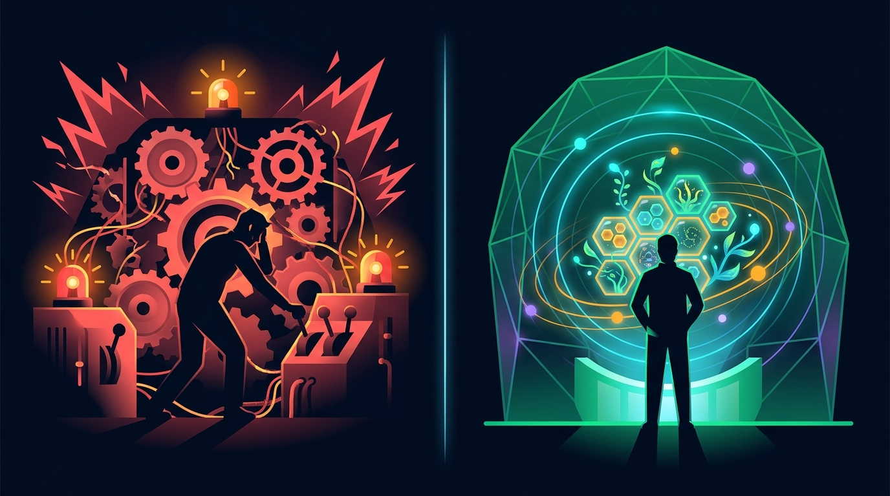
Der größte Vorteil der Nutzpflanzen-Analogie zeigt sich über mehrere Saisons: Hat sich ein Organismus durch 180 Tage voller Mutationen und SexPili-Plasmidkäufe besonders robust entwickelt, exportiert der Gärtner über SporeCoat sein SHA-256-versiegeltes Saatgut-JSON (export_spore). In der nächsten Saison wird dieses bereits optimierte Genom eingepflanzt — oder im optionalen Labor-Tab gezielt mit einer zweiten Spitzenkultur gekreuzt (crossbreed_seed). Jede Generation startet auf den Schultern der vorangegangenen.
Obwohl das gesamte System sofort lokal, offline und deterministisch reproduzierbar läuft, ist der Sprung in echte Märkte bereits im Code verdrahtet (src/prokaryont/adapters/):
LLMAdapter (GeminiLLMAdapter, OpenAICompatibleLLMAdapter): Übernimmt auf Wunsch direkt die Synthese in der Subunit50S gegen echte LLM-APIs.PaymentAdapter (StripePaymentAdapter): Verknüpft die PlasmaMembrane per PROKARYONT_USE_STRIPE=1 direkt mit echten Stripe PaymentIntents.Die rasante Entwicklung von KI-Agenten stellt Gründer, Solopreneure und Führungskräfte vor eine epochale Weiche. Wer versucht, KI-Systeme weiterhin als bloße mechanische Werkzeuge im Ingenieurs-Stil bis ins letzte Detail festzuschreiben und rund um die Uhr manuell zu korrigieren, wird von der Komplexität erdrückt.
Wer dagegen lernt, wie ein Gärtner zu denken — belastbares Saatgut zu konstruieren, klare ökonomische und ethische Leitplanken im Nucleoid und PeptidoglycanLayer zu verankern, gesunde Stoffwechsel- und Speicher-Kreisläufe zu gestalten und reife Überschüsse über den FtsZRing zu ernten —, kann künftig mit einem Bruchteil der eigenen Lebenszeit ein ganzes Gewächshaus vitaler, selbstregulierender Wirtschaftsorganismen kultivieren.